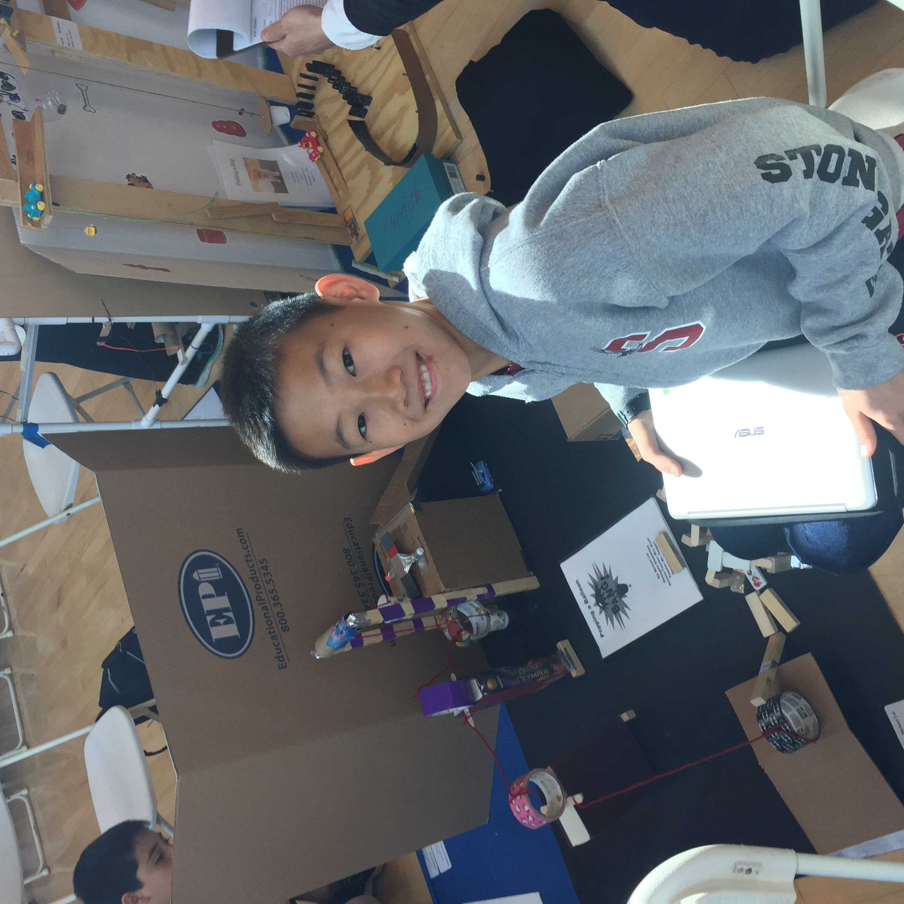

Michael Lai
From the moment I began studying biology, I was captivated by the remarkable complexity of the human body—how every system works together in harmony, and how even the smallest structures can have a profound impact on overall health. That curiosity grew into a deeper purpose: to apply biological knowledge in a hands-on, patient-centered way. Dentistry became the perfect blend of science, artistry, and compassion that allows me to improve people’s health and confidence every day.
As a Biology major, I developed a strong foundation in anatomy, physiology, and microbiology—subjects that revealed the intricate connections between oral and systemic health. I was fascinated by how oral tissues heal, how bacteria influence disease, and how small biological changes can lead to major improvements in wellbeing. This academic background continues to shape my approach to dentistry, where I view every smile through the lens of biological precision and holistic care.
During my undergraduate years at the University of California, Riverside, I sought experiences that allowed me to apply classroom knowledge to real-world care. Through shadowing Dr. Michael Choi, I gained firsthand insight into patient-centered treatment, restorative procedures, and the importance of advanced technologies such as digital iTero scanning. These experiences confirmed that dentistry is not just about treating teeth—it’s about understanding people, building trust, and improving quality of life through science and empathy.
My studies in biology taught me that oral health is deeply interconnected with overall wellness. The mouth serves as a gateway to the body, and its biological systems reflect much more than a smile—they can reveal early signs of heart disease, diabetes, or infection. This scientific understanding inspires me to approach dentistry as a form of preventive medicine. I aim to educate patients about these connections, empowering them to take charge of their health while maintaining confidence in their smiles.
Equally important to me is the artistry within dentistry. Just as biology balances structure and function, dentistry combines precision and creativity. Whether designing a crown, restoring a tooth, or performing a cleaning, I see each procedure as both a scientific and aesthetic endeavor—an opportunity to restore harmony to the body while helping someone feel comfortable in their own skin.
Looking ahead, I am committed to lifelong learning and growth within the dental profession. I plan to integrate advanced biological research, new technologies, and compassionate communication into my future practice. My goal is to create a welcoming environment where patients feel understood, informed, and cared for—because great dentistry starts with listening and ends with a healthy, confident smile.
Becoming a dentist began with a love for biology, but it continues to be fueled by something even greater: the desire to make a meaningful difference in people’s lives through science, empathy, and human connection. Every patient encounter reminds me that dentistry is not just my career—it’s my calling.
Experience
Smile By Design
• Supported front office operations by scheduling appointments, managing patient records, and verifying insurance information to ensure smooth daily workflow.
• Shadowed dental professionals during routine cleanings, exams, and procedures, gaining hands-on exposure to patient care and clinical protocols.
• Assisted with sterilization of instruments and preparation of exam rooms, contributing to a clean, safe, and efficient clinical environment.
Portola High Schoolr
• Provided academic support to lowerclassmen by simplifying complex physics concepts and guiding them through problem-solving strategies.
• Encouraged a collaborative learning environment by leading study sessions and facilitating peer discussions.
Portola Springs Community Center
• Supervised and engaged with children (ages 7-12) in various activities, including sports, arts and crafts, and board games.
• Developed leadership and teamwork skills by coordinating group activities and assisting staff members.
Education
UC Riverside
Portfolio
